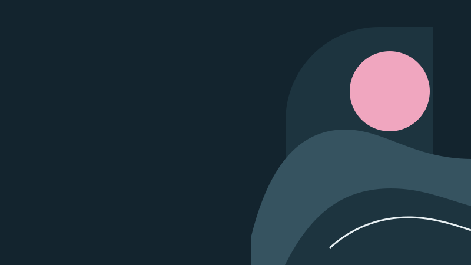

Product empty state
Image System
A collection of illustrations and brand assets.
Comparison samples
These images are for style comparison.


Document and presentation banner
Tideline
tideline-v1.svg
Brand
A collection of illustrations and brand assets.
These images are for style comparison.
Product empty state

Document and presentation banner
tideline-v1.svg
Brand